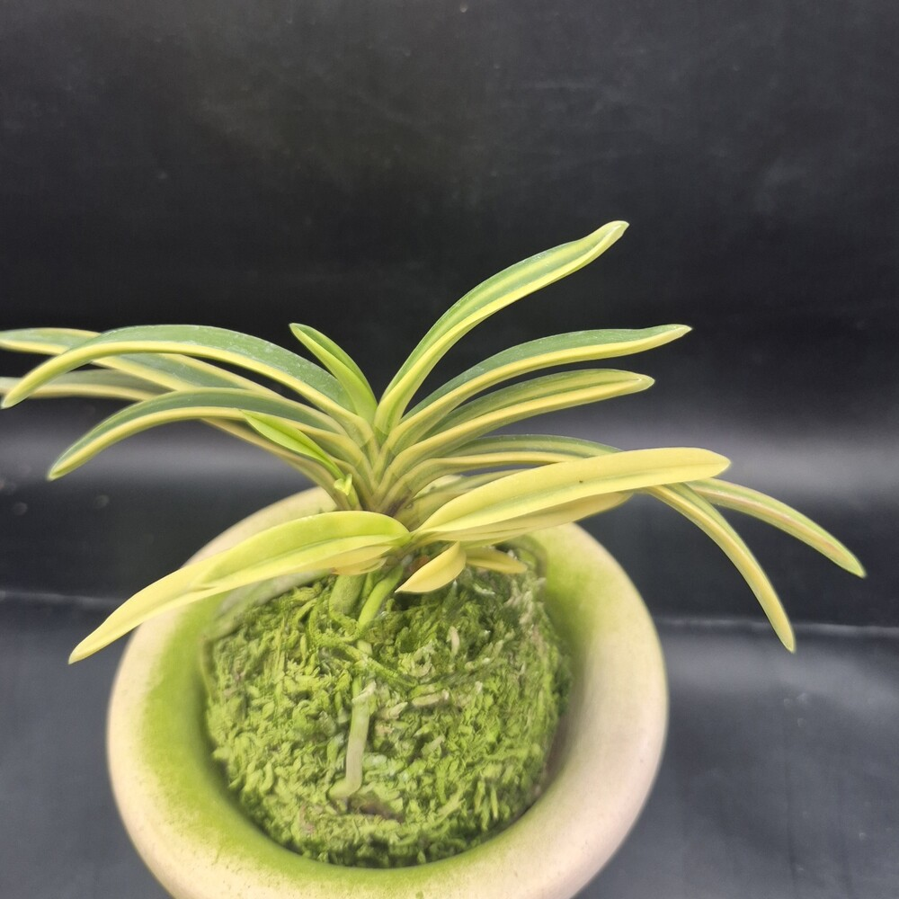
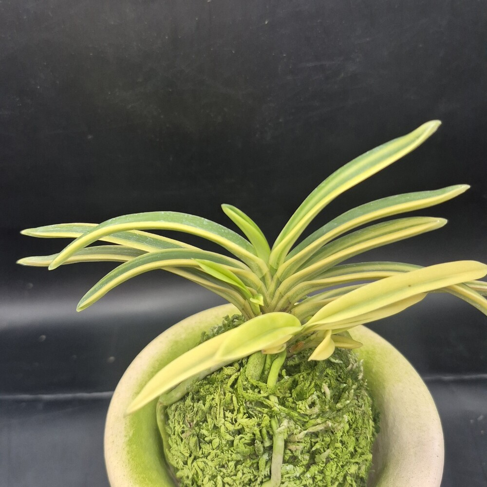
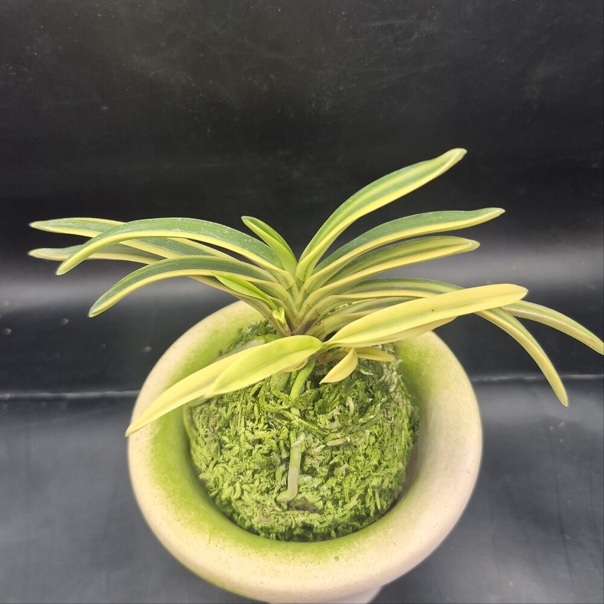
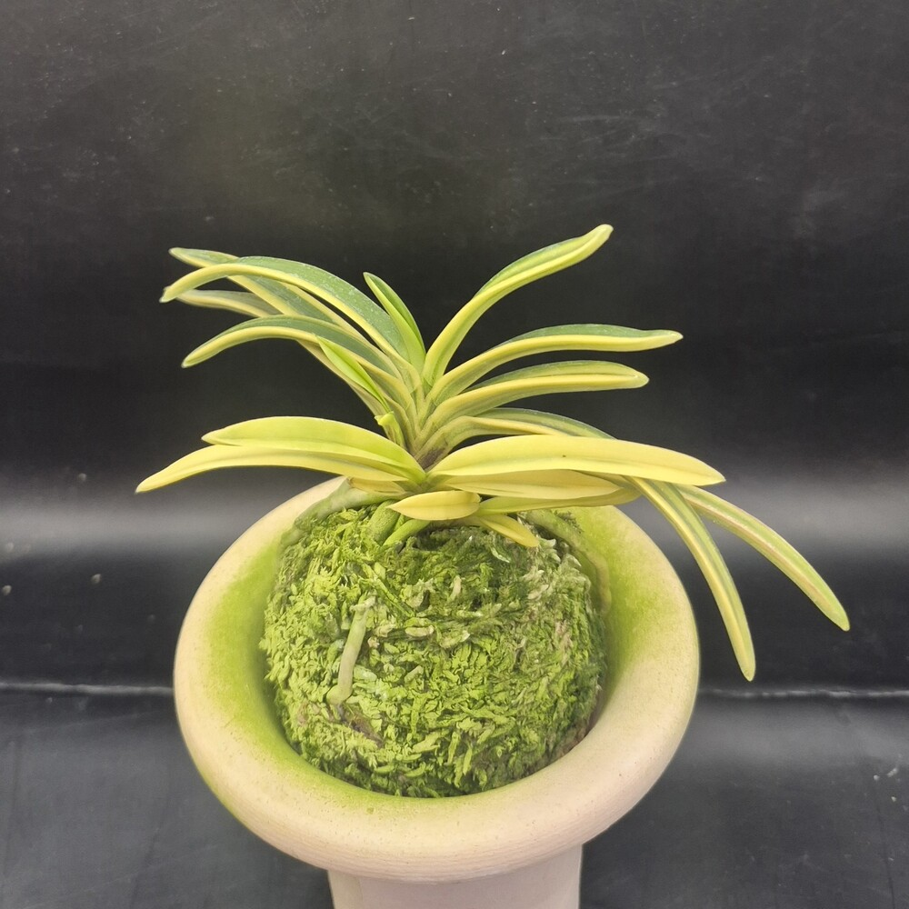
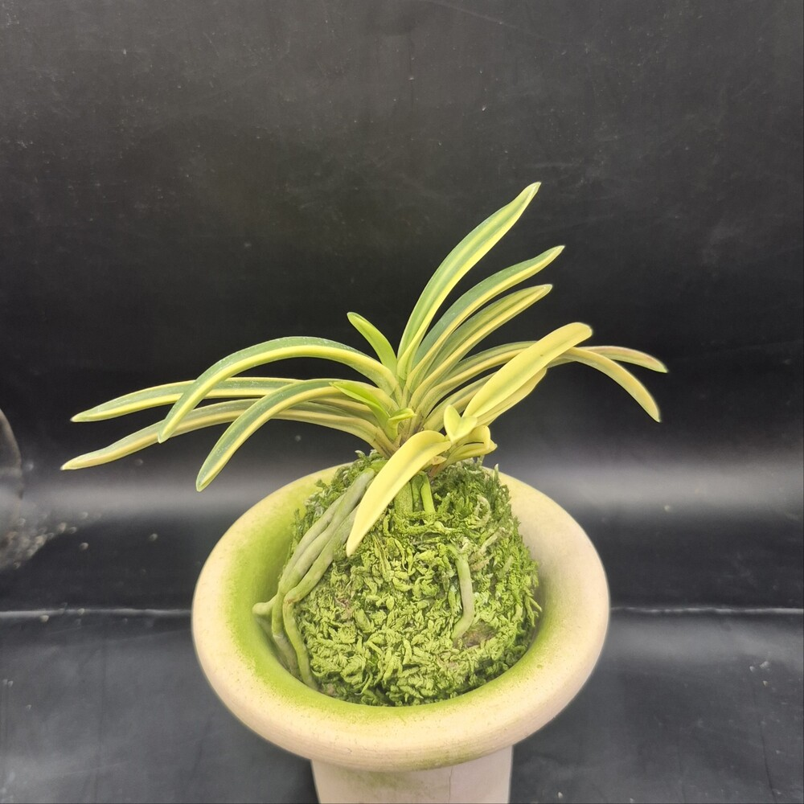
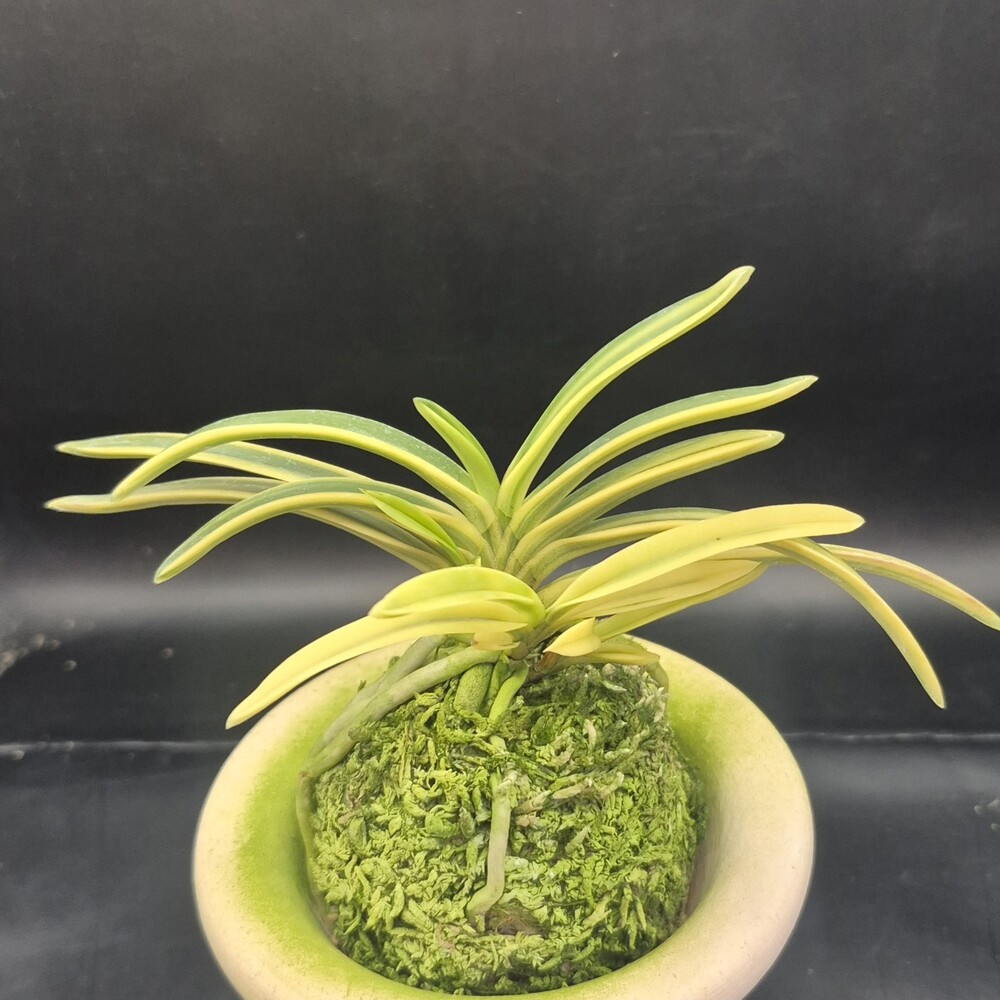
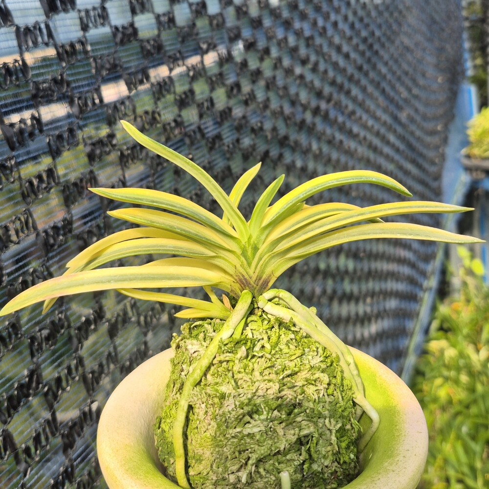
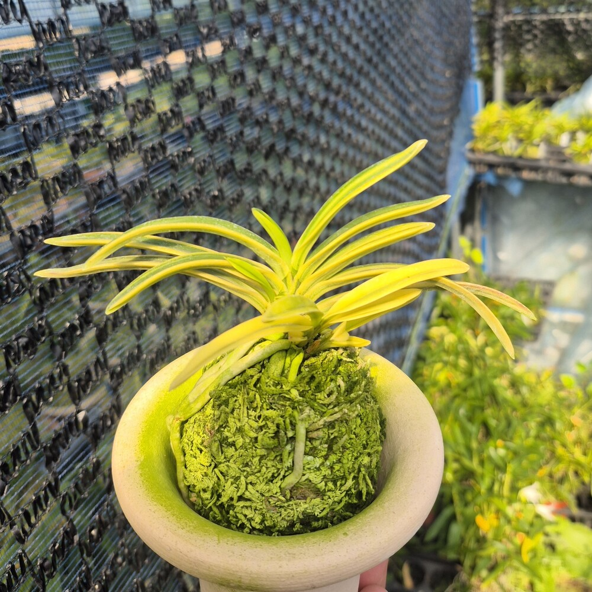

CSFART ORCHID COLLECTION
보금(寶錦) 3811 · 풍란 부귀란
호·중반 · 백황호 · 유려한 희엽 · 보금 3811
80,000원
CSFART보금_3811 · 백황호 · 희엽
보금 3811 사진 · 첫 3장

여러 각도에서 보금 3811의 잎 배열과 백황호 무늬, 수태 위의 뿌리를 살펴보세요.
보금 3811 · 스튜디오 영상
CSFART 브랜드 연출 영상
보금(寶錦)의 예(藝) · 백황호와 희엽
보금은 부드럽게 휘어진 희엽(姬葉)과 밝은 백황호(白黃縞)를 감상하는 풍란 부귀란입니다. 잎마다 녹색과 황백색 무늬의 대비가 다르게 나타나고, 매끄러운 잎 표면의 광택과 단정한 수형이 어우러집니다.
맑은 황백색 호 무늬가 녹색 잎과 조화를 이루고, 부드럽게 휘어진 잎선이 우아한 수형을 완성합니다.
보금 3811의 예(藝)를 살펴보는 설명 9장
백황호의 무늬, 희엽의 곡선, 수태 위의 뿌리를 원형 확대컷과 연결선으로 살펴보세요.

보금 3811 · 04번째 각도


보금 3811 · 05번째 각도


보금 3811 · 06번째 각도


보금 3811 · 07번째 각도


보금 3811 · 08번째 각도


보금 3811 · 09번째 각도


보금 3811 · 10번째 각도


보금 3811 · 11번째 각도


보금 3811 · 80,000원
구매 및 실시간 판매 조건은 CSFART 네이버 스마트스토어에서 확인하실 수 있습니다.
네이버에서 구매하기 ↗가격·재고·배송 안내는 스마트스토어 최종 표시 기준입니다.